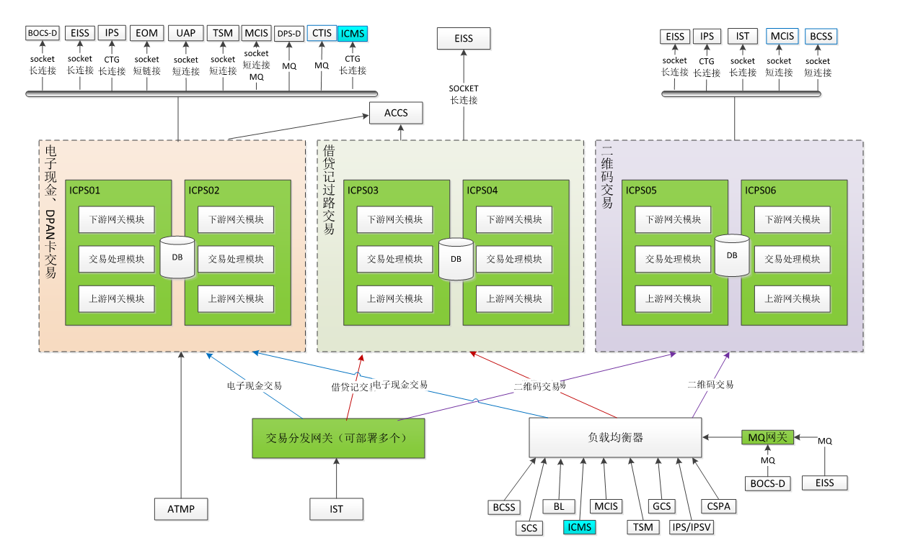
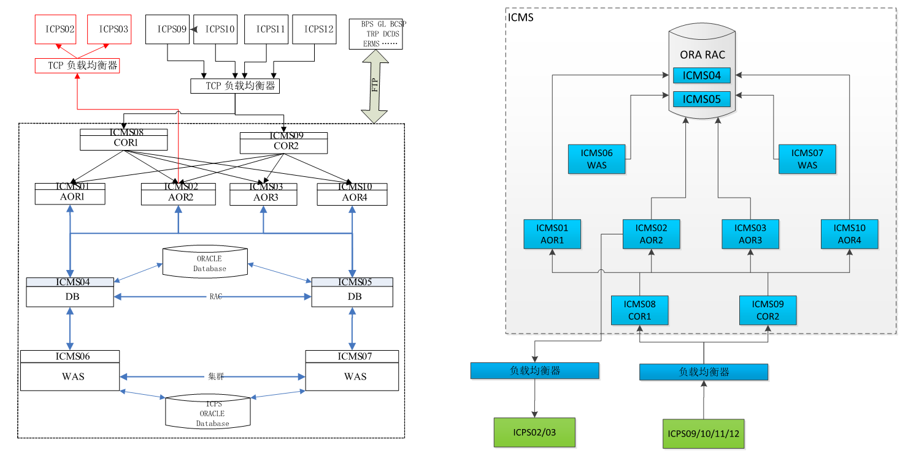
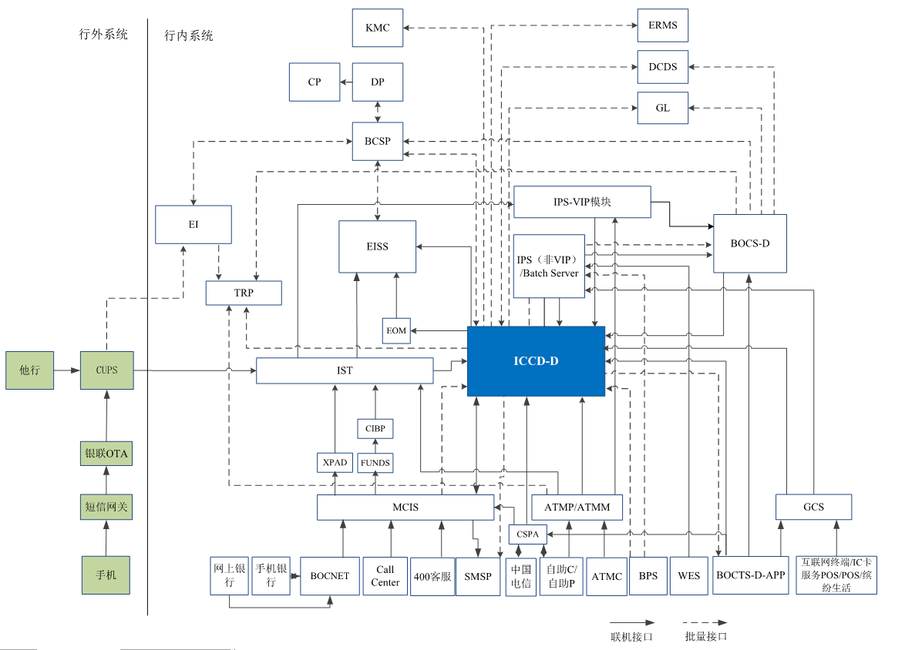

第一章 机器列表、架构图、交易路由¶
1.1 机器列表¶
生产环境机器介绍:
生产IP 角色 简要备注
21.123.50.34 负载均衡 P端前置的负载均衡，监控的负载均衡
21.123.50.32 负载均衡 P 端应用的负载均衡
21.123.50.82 应用节点 P端,只运行 长链接进程 IST,ATMP (ICPS01)
21.123.50.83 应用节点 P端,处理交易的集群模块，上游进程全部起来了 (ICPS02)
21.123.50.84 应用节点 P端,处理交易的集群模块，上游进程全部起来了 (ICPS02)
21.123.50.85 应用节点 P端,只运行 长链接进程 IST,ATMP (ICPS01)
21.123.50.86 应用节点 P端的交换模块(连接加密机)， ps -ef|grep icps |wc -l 共443个进程
21.123.50.87 应用节点 P端的交换模块， ps -ef|grep icps |wc -l 共443个进程
21.123.50.88 应用节点 P端的交换模块， ps -ef|grep icps |wc -l 共443个进程
21.123.50.89 应用节点 P端的交换模块， ps -ef|grep icps |wc -l 共443个进程
21.123.50.90 应用节点 交易路由的下游， ps -ef|grep icps|grep com |wc -l (367个)，
ps -ef|grep icps |grep mq |grep -v xml |grep -v qrc |wc -l (22个MQ 进程)
21.123.50.91 应用节点 交易路由的下游，ps -ef|grep icps|grep com |wc -l （345），比90,93 少22个MQ 进程
21.123.50.92 应用节点 交易路由的下游，ps -ef|grep icps|grep com |wc -l （345），比90,93 少22个MQ 进程
21.123.50.93 应用节点 交易路由的下游， ps -ef|grep icps|grep com |wc -l (367个)，
ps -ef|grep icps |grep mq |grep -v xml |grep -v qrc |wc -l (22个MQ 进程)
21.123.50.94 数据库节点 P端批量服务器，晚上7点跑批，2,3分钟，导出当日流水表；
PLSQL 查询串：21.123.50.94/oraicps appview1/appview1$，
select * from icps01.icpzpspf t ;
21.123.50.97 数据库节点
21.123.50.99 应用节点 灾备数据库
21.123.99.102 应用节点 灾备节点，登不上
21.123.50.64 应用节点 M端的数据来源于P端，电子现金交易，PAY 类交易
M 端读取数据库记录，发短信
M 电子现金 ，读一条，加个标记，不重复发
M ->P->TSM , M端 只连接P 端 ， 发ctis , 短信，p 端来发，短连接，
M 端每个节点启11个进程
ice040ic （5个， 短信，apple pay 借记卡激活短信）
ice060ic （5 个， 推ctis 电子现金交易流水）
ice070ic （1个， 移动支付pay 类状态变化通知，比如在柜台注销pay)
/icmst01/cfg/config.ini (进程数配置）
启动进程后，会读取配置文件，启动指定数量的实例
停止进程，要删除目录里的空文件，删一个停一个
/icmst01/bin/onl/amdpn/icms (删掉后，停 ice070ic）
/icmst01/bin/onl/procs/icms （删掉后，停ice040ic ）
/icmst01/bin/onl/ctics/icms (删掉后，停ice060ic）
启动路径：
/icmst01/bin/onl/ice040ic
/icmst01/bin/onl/ice060ic
/icmst01/bin/onl/ice070ic
启动后，读数据库，把进程带起来，创建空文件，空文件没了，
进程就停下。启停都是通过删文件来操作的。尽量不用kill
select * from icms01.icmsptpf; (各种参数配置）
M 端应用程序，由CICS 调起
检查CICS 状态 ：
$ lssrc -a|grep cics
cicssfs.SFS_01 8978592 active
cics.PICMSAR1 49414228 active
新增交易报文时，需要改CICS 配置文件，更新程序，要重启CICS
做服务端，P端通过CICS ， 调 /icmst01/bin/onl ，这里的程序都是供CICS 调用的。
配置文件：
/icmst01/cfg/config.ini (联机和批量参数）
/icmst01/cfg/iet.dat （CICS 报文配置文件）
21.123.50.65 应用节点 M端的联机节点
21.123.50.66 应用节点 M端的联机节点
21.123.50.67 应用节点 M端的联机节点
21.123.50.68 应用节点 M端的联机节点，前置
21.123.50.69 应用节点 M端的联机节点，前置
21.123.50.70 数据库节点 M端数据库
批量服务器，文件收发，CD 和ftp，给EI,RPT系统，GLS 总账 ftp推送,共享存储
生产环境PLSQL 连接串
21.123.50.70/oraicms appview1/appview1$
21.123.50.73 数据库节点
21.123.50.75 WAS WAS 节点，http://21.123.50.75:9060/admin 用户和密码？
负载均衡地址，http://21.123.50.32/ICCD/intologin.do
21.123.50.76 WAS WAS节点 用户和密码？
21.123.50.77 应用节点 灾备，进不去
21.123.50.80 应用节点 灾备，进不去
21.123.50.104 数据库节点 R端报表数据库，收到M端，P端的DMP 文件，加工报表
生产环境PLSQL：21.123.50.104/oraICRS appview1/appview1$
21.123.50.107 数据库节点 R报表数据库
21.123.50.109 监控节点 监控系统：21.123.50.32:81/ICWS admin88/111111
21.123.50.110 监控节点 监控系统
21.123.50.32 负载均衡 监控系统负载均衡
21.123.50.170 HA交易节点 移动支付消息推送，每次打版本只打活的，同步机制需要问系统2
21.123.50.172 移动支付消息推送，活着的
21.125.37.183 应用节点 澳门
21.125.37.184 应用节点 澳门
21.125.37.185 数据库节点 澳门
21.125.37.188 数据库节点 澳门
| Inputs | Output | |
|---|---|---|
| A | B | A or B |
| False | False | False |
| True | False | Truevvvvvvvvvvvvvvvvvvvvvvvvvvvvvvvvvvvv vvvvvvvvvvvvvvvvvvvvvvvvvvvvvvvvvvvvvvvvvvvvvvvvvvvvvvvvvvvvvvvvvvvvvvvvvvvv january |
| False | True | True |
| True | True | True |
1.2 架构¶
P端架构:
M端架构
电子现金架构
